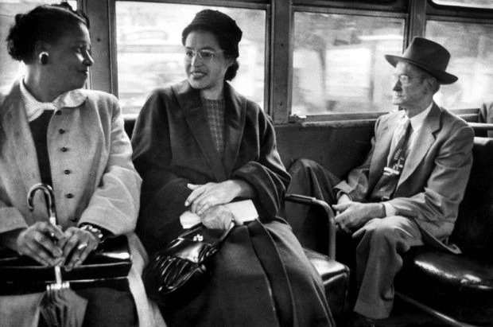

Rosa Parks
The mother of the civil rights movement

Rosa Parks sitting in a bus
Here's a time line of Rosa Park's life:
- February 4, 1913 - Rosa was born in Tuskegee, Alabama, U.S
- 1943 -Parks became an NAACP activist participating in several high-profile civil rights campaigns.
- 1944 - in her capacity as secretary, she investigated the gang-rape of Recy Taylor, a black woman from Abbeville, Alabama.
- December 1, 1955 - Parks rejected bus driver James F. Blake's order to vacate a row of four seats in the "colored" section in favor of a white passenger, once the "white" section was filled
- 1960 - Parks became an icon of the Civil Rights Movement but suffered hardships as a result. Due to economic sanctions used against activists, she lost her job at the department store.
- 1970 - Rosa Parks organized for the freedom of political prisoners in the United States, particularly cases involving issues of self-defense.
- 1980 - In February 1987, she co-founded, with Elaine Eason Steele, the Rosa and Raymond Parks Institute for Self Development, an institute that runs the "Pathways to Freedom" bus tours which introduce young people to important civil rights and Underground Railroad sites throughout the country.
- 1990 - Parks was invited to be part of the group welcoming Nelson Mandela upon his release from prison in South Africa.
- 1999 - She received the Congressional Gold Medal, the highest award given by the US legislative branch, the medal bears the legend "Mother of the Modern Day Civil Rights Movement
- 2000 - She received the first Governor's Medal of Honor for Extraordinary Courage.
- 2002 - She received the Walter P. Reuther Humanitarian Award from Wayne State University.
- October 24, 2005 - Rosa Parks died of natural causes at the age of 92, in her apartment on the east side of Detroit.
"Like so many giants of her age, Rosa Parks is no longer with us. But her lifetime of activism – and her singular moment of courage – continue to inspire us today. Refusing to give up a seat on a segregated bus was the simplest of gestures, but her grace, dignity, and refusal to tolerate injustice helped spark a Civil Rights Movement that spread across America. "
-- President Barack Obama